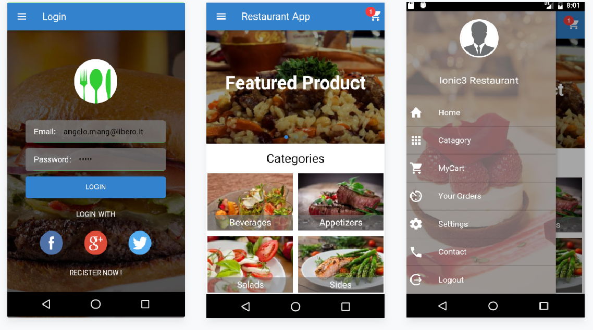

Thanks you for purchasing my theme.
Click on to download the android app free demo apk installer.
If you have any questions that are beyond the scope of this help file,
please feel free to email via my user page contact form here
or open an issue clicking on "Contact Issue" button.
Thanks so much!
First make sure you have installed node.js and npm to latest version. You can check it on own terminal window simply by entering node -v and npm -v . You can also download latest nodeJs from here.
Make sure you have installed ionic 3 and Cordova . You can check ionic version in terminal with ionic -v command . If you need more info how to setup ionic project please follow “ionic Getting started” at there official websites.
Ionic 3 target IOS, Android, Window all these three platform so you need to install there respective SDK to make a build. Even if you didn’t have SDK configure still you can run this app in own browser.
Open the Terminal and navigate to the project folder and install NodeJS dependencies :
$ npm install
Once both dependencies are installed successfully you can run the app in browser window with :
$ ionic serve
You can also run this app with Ionic Lab , It will open apps in multiple Device at a time and it's good way to Test your own apps .
$ionic serve --lab

If there any issue please google it or if you didn't find solution report us , we will looked into it.
This app Design with SASS and extremly customizable as it needed :
If you go inside Pages you can found all the page modules this is how ionic structured. With each module you can found .SCSS Files Here you can Edit our SCSS as you needed.
Better you can add own Custom class on top of our class so it will be easy to upgrade if we comes with next update.
If you like to do any universal changes throughout the app you can write css in src > app.scss file.
You can changes Entire apps color With Just a Single line of Color code changes
$primary : #32cd32 // You can add the own color
You can also customize remaining Variable as well and play around color combination.
In Ionic 3 you don't need to worry about .JS as you know it's Written in TypeScript . Inside src directory you can find pages Directory Here you can write all the Component based Logic
Ionic 3 automatically Compile all the .TS files into .JS and run apps from WWW > BUILD Directory .
All the Demo Data comes through JSON files We have in src > assets > json
You can update that JSON or use own API instead .
To setup SDK on MAC follow this link or if you are window user please follow this link .
Run your app in IOS emulator
$ ionic cordova platform add ios
$ ionic cordova run ios
Run your app in Android emulator
$ ionic cordova platform add android
$ ionic cordova run android
You can use genymotion instead of android default emulator because it will Fast to Load.
Add icon and splash screen (*resources/icon.png and resources/splash.png*) in your app
$ ionic cordova resources
After this re-run the ionic cordova run commands to view the icon and splash screen applied.
Thanks so much to